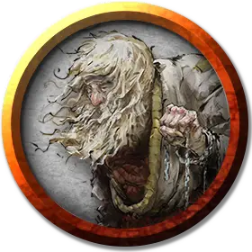

Мастер душ
Master of Souls
Средний Гуманоид (Человек), нейтрально-злой

Класс Доспеха 12
Хиты 45 (6к8 + 18)
Скорость 30 футов
| мод | спас | ||
|---|---|---|---|
| СИЛ | 10 | +0 | +0 |
| ЛОВ | 14 | +2 | +2 |
| ТЕЛ | 17 | +3 | +3 |
| мод | спас | ||
|---|---|---|---|
| ИНТ | 19 | +4 | +4 |
| МДР | 14 | +2 | +4 |
| ХАР | 13 | +1 | +1 |
Навыки Магия +6, Религия +6
Чувства пассивное Восприятие 12
Языки Общий, Бездны, Инфернальный
Опасность 4 (1100 опыта)
Бонус мастерства +2
Особенности
Использование заклинаний. Мастер душ является заклинателем 5-го уровня. Его базовой характеристикой является Интеллект (Сл спасброска от заклинаний 14, +6 к атакам заклинаниями). Он знает следующие заклинания волшебника:
• Заговоры (неограниченно): леденящее прикосновение [chill touch] (см. "Действия" ниже), волшебная рука [mage hand], сообщение [message], фокусы [prestidigitation];
• 1 уровень (4 ячейки): огненные ладони [burning hands], обнаружение магии [detect magic], луч болезни [ray of sickness] (см. "Действия" ниже), щит [shield];
• 2 уровень (3 ячейки): тьма [darkness], туманный шаг [misty step], палящий луч [scorching ray] (см. "Действия" ниже);
• 3 уровень (2 ячейки): восставший труп [animate dead], огненный шар [fireball];
Магия могилы. Когда мастер душ накладывает заклинание, наносящее урон, он может изменить тип урона заклинания на некротическую энергию.
Действия
Цеп с посеребрённым черепом. Рукопашная атака оружием: +2 к попаданию, досягаемость 5 футов, одно существо. Попадание: 4 (1к8) дробящего урона плюс 7 (2к6) урона некротической энергией, и цель получает помеху на все спасброски до конца следующего хода мастера душ.
Леденящее прикосновение (заговор). Дальнобойная атака заклинанием: +6 к попаданию, дистанция 120 футов, одно существо. Попадание: 13 (2к8) урона некротической энергией, и цель не может восстанавливать хиты до начала следующего хода мастера душ. Если цель— нежить, она так же получает помеху к броскам атаки по мастеру душ на ту же длительность.
Палящий луч (заклинание 2-го круга, требует ячейку заклинания). Дальнобойная атака заклинанием: +6 к попаданию, дистанция 120 футов, одна цель для каждого луча (3 луча для ячейки 2-го уровня, 4 луча для ячейки 3-го уровня). Попадание: 7 (2к6) урона огнём за каждый луч.
Луч болезни (заклинание 1-го уровня, требует ячейки заклинания). Дальнобойная атака заклинанием: +5 к попаданию, дистанция 60 футов, одно существо. Попадание: 9 (2к8) урона ядом, и цель должна совершить спасбросок Телосложения Сл 14, при провале она отравлена до конца следующего хода мастера душ. Если мастер душ накладывает это заклинание, используя ячейку 2-го уровня или выше, урон увеличивается на 1к8 за каждый уровень выше 1-го.
Описание
Миркул — Владыка Костей, повелевающий трупами и душами. Его культисты желают получить от мёртвых знания, силу и даже обратить их себе на службу.
Миркул способен призвать душу любого убитого существа и заточить её в восковом черепе. Но для этого Миркулу нужна какая-нибудь часть физического тела существа, которую он измельчает и использует прах при создании черепа. Пока душа остаётся в черепе, его глазницы пылают холодным синим пламенем. Пока череп невредим, Миркул может заставить пленную душу отвечать ему на вопросы и делиться знаниями. С каждым ответом череп всё больше разрушается, пока не рассыплется совсем, освободив душу. Её также можно освободить, окатив восковой череп святой водой.
Миркул расчётлив, необщителен и погружён в себя. Его волнует только накопление знаний, а повседневные проблемы жизни его раздражают и отвлекают. Он счастлив, когда может окружить себя книгами знаний и нежитью, которую он вызвал и подчинил.
Миркулу поклоняются либо волшебники, либо те, кто хочет овладеть искусством некромантии.
Искатели знаний. Культисты Миркула изучают ритуалы, позволяющие им подчинять души мёртвых, заставляя отвечать на вопросы и делиться забытым знанием. Культисты ищут мистические тайны в древних руинах и пытаются выкрасть книги заклинаний и прочие тома у волшебников, не входящих в культ.
Иерархия культа. Последователи Миркула используют цепы с бойками в виде черепов. Некромайты — это послушники, которые ещё не овладели мистической магией и дерутся цепами. Черепобойцы — это заклинатели, которые дополняют магией свои боевые навыки. Мастера душ глубоко погружены в тайны Миркула, умеют оживлять мёртвых и творить прочую зловещую магию.